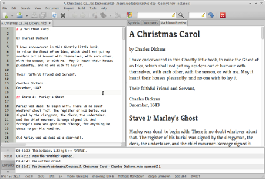
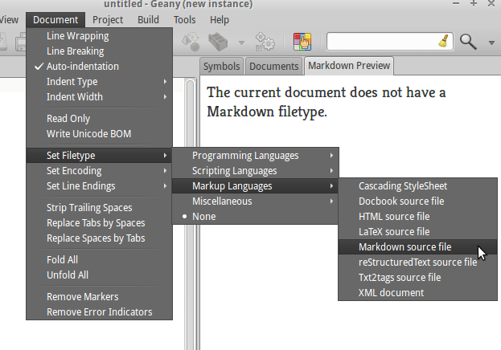
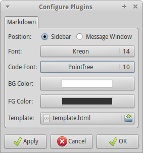
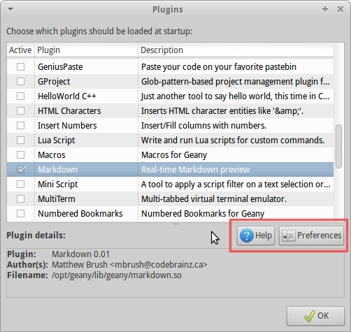
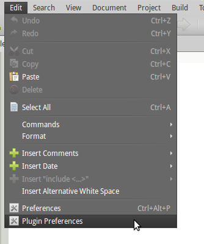

This plugin provides a real-time preview of rendered Markdown, that is, Markdown converted to HTML and inserted into an HTML template and loaded into a WebKit view.
The preview is active by default for all documents with a Markdown filetype set. To set a document's filetype, choose from the menus:

Other than that the operation should be fully automatic. Use the Plugin Preferences mechanism to customize some settings as described below.
For more information on Markdown syntax, read the Markdown Syntax Documentation.
GitHub-Flavored pipe tables are supported, including column alignment and inline markup (bold, code, links, formulas) in cells:
| 对象 | 定义 | 可否建模 | |---|:---:|---:| | 价格 $P_t$ | **非平稳** | ❌ | | 对数收益 | 弱平稳 | ✅ |
By default the preview uses the colors of the currently selected Geany color scheme (View → Color Schemes): body background/foreground, text selection, code backgrounds and table chrome. Switching the scheme re-renders the preview automatically. Uncheck Use current Geany color scheme in the plugin preferences to fall back to the manual BG Color / FG Color settings.
Use View → Zoom In / Zoom Reset / Zoom Out (default keybindings Ctrl++, Ctrl+0, Ctrl+-) or Ctrl + mouse wheel in the editor. The preview scales by the same factor, computed from the editor's zoom in points relative to the configured body font size. The zoom level is restored after each preview re-render and follows document switches.
The default HTML template includes a UTF-8 charset meta tag, a responsive viewport meta tag and adaptive CSS: images and videos scale to the screen width, wide tables scroll horizontally below 800 px, and iOS/WeChat text-size inflation is disabled. The same markup is written by Tools → Export Markdown as HTML, so exported files render correctly when opened on a phone, iPad or in the WeChat browser. Older custom templates without these tags get the meta tags and a md-responsive-css block injected automatically before </head>.
The preview renders LaTeX-style formulas in real time. The following delimiters are recognized (they are extracted before Markdown parsing, so _, * and & inside formulas are never mangled):
| Syntax | Meaning |
|---|---|
| $E = mc^2$ | Inline math |
| \(a_i + b_i\) | Inline math (alternative delimiter) |
| $$\int_0^1 x\,dx$$ | Display (block) math |
| \[\dv{y}{x}\] | Display math (alternative delimiter) |
Fenced/inline code blocks and escaped \$ are never treated as math. A leading/trailing space inside $...$ is not allowed, so plain currency text like $5 and $10 stays untouched. Formula rendering can be disabled and the engine can be switched in the plugin preferences. Rendering is fully offline: MathJax 3.2.2 and KaTeX 0.18.7 are bundled in the plugin's data directory (see math/README).
GitHub-style pipe tables are supported, including alignment markers and inline markup (bold, code, links, formulas) inside cells:
| Object | Definition | Note | |--------|:----------:|-----:| | $P_t$ | **price** | 1 | | `\|` | escaped | 2 |

Using Geany's normal Plugin Preferences mechanism, you can customize some important settings related to the Markdown preview. The preferences dialog allows changing the following settings:
There's two ways to access the Plugin settings, one is through the Plugin Manager using the buttons highlighted below:

Clicking the Help button opens this document in HTML format in your web browser. The other way to access the plugin's preferences is through the Edit menu as pictured below:

You can provide a custom HTML template file which contains the substitution strings that get replaced at run-time. The following substitution strings are available:
| Substitution String | Description |
|---|---|
| @@markdown@@ | The most important substitution string and gets replaced with the HTML generated from the editor's Markdown buffer. Not having this one in the template makes the plugin completely useless. |
| @@font_name@@ | The normal font family. |
| @@code_font_name@@ | The code/monospace font family. |
| @@font_point_size@@ | The size in points of the normal font. |
| @@code_font_point_size@@ | The size in points of the code/monospace font. |
| @@bg_color@@ |
|
| @@fg_color@@ |
|
| @@math_assets@@ |
|
The default template file (at the time of writing) contains the following HTML code:
<html>
<head>
<meta charset="UTF-8">
<meta name="viewport" content="width=device-width, initial-scale=1.0">
<style type="text/css">
body {
font-family: @@font_name@@;
font-size: @@font_point_size@@pt;
background-color: @@bg_color@@;
color: @@fg_color@@;
word-wrap: break-word;
-webkit-text-size-adjust: 100%;
}
code, pre {
font-family: @@code_font_name@@;
font-size: @@code_font_point_size@@pt;
}
pre { overflow-x: auto; }
img, video, canvas, svg { max-width: 100%; height: auto; }
table { border-collapse: collapse; margin: 1em 0; }
th, td { border: 1px solid #888; padding: 0.3em 0.7em; }
th { background: rgba(127,127,127,0.15); }
tr:nth-child(even) { background: rgba(127,127,127,0.06); }
</style>
<style id="md-responsive-css">
@media (max-width: 800px) {
table { display: block; overflow-x: auto; max-width: 100%; }
body { padding: 0.75em; }
}
</style>
</head>
<body>
@@markdown@@
</body>
</html>
As you can see it's just normal HTML/CSS and you can tweak it to make the preview contents look exactly how you want. The preview view is a WebKit browser, the same one used by Google's Chrome Browser and Apple's Safari Browser as well as numerous others, and it supports many modern features such as HTML5 and CSS3 support (at least partially).
If you mess up the default template.html file, just delete it and the default one will be recreated the next time the Markdown plugin is reloaded (for example when Geany restarts).
The plugin depends on the following libraries:
No extra dependencies are needed for formula rendering; the MathJax and KaTeX assets are bundled and installed under the plugin's data directory.
The Markdown plugin is licensed under the GNU General Public License, version 2. For the full text of the license, please visit http://www.gnu.org/licenses/gpl-2.0.html. The GPL license covers all code and files not in the discount directory.
All code inside the discount directory is under a BSD-style license (see the discount/COPYRIGHT file) and all contributions to this code will remain under this license. This will make it easier to integrate improvements to Discount back upstream if it ever makes sense. So far the only changes are superficial to allow it to build with the Geany-Plugins build system and to prevent some compiler warnings.
The Geany Markdown plugin is written and maintained by:
Matthew Brush <matt(at)geany(dot)org>
The plugin includes the Discount Markdown library, developed by:
David Loren Parsons <http://www.pell.portland.or.us/~orc>
The bundled formula rendering assets are developed by others:
MathJax 3.2.2 - Apache-2.0 (https://www.mathjax.org/) KaTeX 0.18.7 - MIT (https://katex.org/)
You can email me at matt(at)geany(dot)org, or find me on the #geany IRC channel on FreeNode, with the nickname codebrainz.